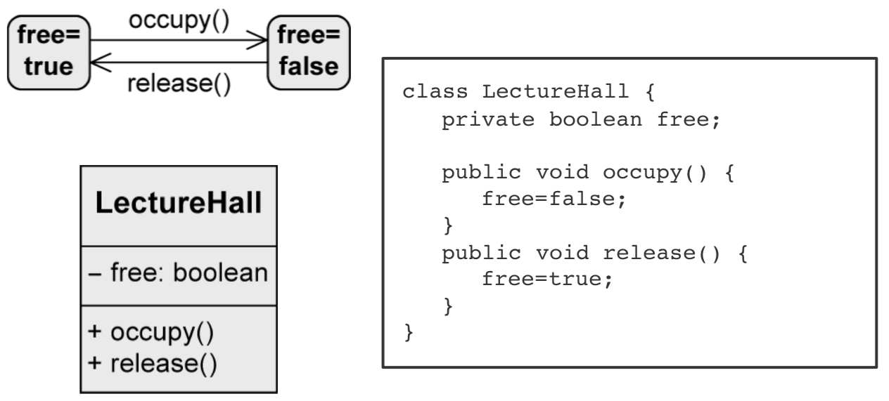
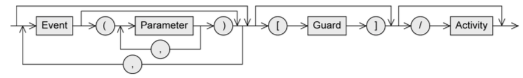
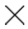
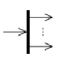
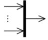

Modeling behavior with UML State Machines
Introduction
every object has finite set of states during life.
state machine diagram is used to:
-
model possible states of system/object
-
show how state transitions occur as consequence of events
-
show behavior of system in each state

States
states are the nodes of state machine
when a state is active:
-
object is in that state
-
all internal activities in that state can be executed:
-
entry/Activity - when object enters the state
-
do/Activity - while object remains in this state
-
exit/Activity - when object exits the state
Transitions
change from one state to another

Syntax of transitions:

-
Event (trigger)
-
can trigger state transition
-
Guard (condition)
-
boolean expression
-
if event occurs, guard is checked
-
if guard is true:
-
all activities in current state are terminated
-
exit activity is executed
-
transition happens
-
Activity (effect)
-
sequence of actions that happen during transition
Types:

-
if
event1 happens, object stays in state1 and Activity3 runs

-
if
event1 happens:
-
object leaves
state1, Activity2 runs
-
Activity3 runs
-
object enters
state1 and Activity1 runs
Timing of transitions:

Types of events
-
Signal event: receipt of a signal (
rightmousedown, sendSMS(message))
-
Call event: operation call (
occupy(user, lectureHall), register(exam))
-
Time event: time-based state transition (relative or absolute time)
-
Any receive event: when any event occurs that doesn't trigger another transition from the active state
-
Completion event: automatic when everything is completed in the current state
-
Change event: permanently checking when a condition becomes true
A change event is permanently checked. A guard is only checked when the event occurs.
Types of states
Initial state:
-
"start" of the diagram
-
pseudo-state, system can't remain in this state
-
no incoming edges
-
outgoing edges have to be mutually exclusive and at least one target must be reachable. no events allowed.
-
system immediately switches from initial state.
-
notation:
Final state:
-
real state
-
end of sequence of states
-
can remain in this state forever
-
notation:
Terminate node:
-
pseudo-state
-
terminates state machine
-
modeled object is deleted
-
notation: 
Decision node:
-
pseudo-state
-
used for alternative transitions
-
notation:

Parallelization node:
-
pseudo-state
-
splits control flow into multiple concurrent flows
-
1 incoming edge, >1 outgoing edges
-
notation: 
Synchronization node:
-
pseudo-state
-
merges multiple concurrent flows
-
>1 incoming edge, 1 outgoing edge
-
notation: 
Composite state:
-
contains substates, with only one of them active at any time
-
arbitrary nesting depth
-
higher level events take priority
Orthogonal state:
-
composite state divided into two or more regions, separated by dashed line
-
one state of each region is always active at some point (concurrent substates)
-
final state has to be reached in all regions to trigger completion

Submachine state (SMS)
-
to reuse parts of state machine diagrams in other ones
-
as soon as submachine state is activated, behavior of submachine is executed (subroutine)
-
notation:
state:submachineState

History state:
-
remembers the last active substate of a composite state
-
activates 'old' substate and all entry activities run sequentially from outside to inside of composite state
-
exactly one outgoing edge of history state points to a substate. used if the composite state was never active, or it was exited via final state.
-
shallow history state restores state on the same level of the composite state (
H)
-
deep history state restores last active substate over all levels (
H*)
Entry and exit points
Encapsulation mechanism: a composite state shall be entered/exited via a state other than initial and final states.
external transition must/need not know structure of composite state.